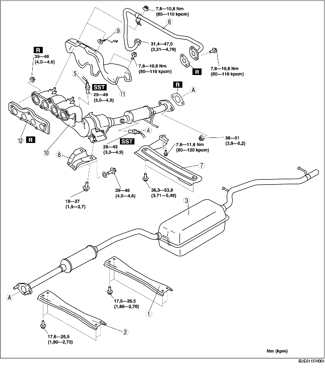

1. Demontera batterikåpan. (Se DEMONTERING/MONTERING AV BATTERI [ZJ, Z6].)
2. Lossa batteriets minuskabel.
3. Ta bort den undre kåpan.
4. Demontera i den ordning som anges i tabellen.
5. Montera i omvänd ordning mot demonteringen.

.
1. Ta av framhjul och framdäck.
2. Utför följande procedur för att få lättare åtkomst.
Europeiska specifikationer (vänsterstyrning)3. Demontera EGR-röret (insugningsrörets sida). (Se DEMONTERING/INSTALLATION AV INSUGSLUFTSYSTEM [ZJ, Z6].)
4. Demontera EGR-ventilkomponenten. (Se DEMONTERING/MONTERING AV EGR-VENTIL [ZJ, Z6].)
5. Koppla ur rattstången från styrväxelns och länksystemets sida. (Se DEMONTERING/MONTERING AV STYRVÄXEL OCH LÄNKSYSTEM.)
6. Koppla ur tryckslangen och returslangen. (Se DEMONTERING/MONTERING AV STYRVÄXEL OCH LÄNKSYSTEM.)
7. Demontera gummimotorfäste nr. 1. (Se DEMONTERING/MONTERING AV MOTOR [ZJ, Z6].)
8. Lossa skruvarna som håller skyddet över avgasgrenröret.
9. Flytta grenrörsskyddet en bit ur vägen och lossa muttrarna till avgasgrenröret.
10. Ta loss fästbultarna för främre krängningshämmaren och tvärbalk fram. (Se DEMONTERING/MONTERING AV TVÄRBALK FRAM.)
11. Lossa fästskruvarna för den främre tvärbalkskomponenten och sänk ner den främre tvärbalkskomponenten cirka 100 mm {3,94 tum}. (Se DEMONTERING/MONTERING AV TVÄRBALK FRAM.)
12. Stötta upp det flexibla röret med en stödlindning eller spjäla som figuren visar.
13. Demontera avgasgrenröret tillsammans med grenrörsskyddet genom att sänka det mot fordonets undersida.
1. Dra åt avgasgrenrörets muttrar i den ordning som visas i figuren.
1. Dra åt EGR-rörets skruvar och muttrar i den ordning som visas i figuren.